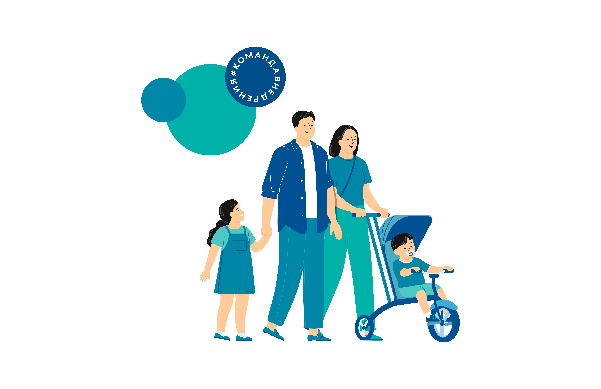

Персональный навигатор по мерам поддержки для участников СВО и их семей
Ответьте на несколько простых вопросов, и мы сформируем для вас индивидуальный список всех положенных льгот, выплат и услуг в Республике Марий Эл.
Подобрать меры поддержки

Какие меры поддержки можно найти?
Денежные выплаты
Единовременные и ежемесячные выплаты, региональные доплаты, компенсации.
Жилищные и налоговые льготы
Компенсация ЖКУ, освобождение от налога на имущество, кредитные каникулы.
Поддержка семей
Зачисление детей в сады и школы, бесплатное питание, путевки в лагеря.
Часто задаваемые вопросы
Это безопасно? Вы собираете мои данные?
Сервис работает анонимно. Мы не собираем и не храним персональные данные. Все расчеты производятся в вашем браузере, а ответы используются только для подбора мер поддержки.
Кто может воспользоваться сервисом?
Сервис предназначен для мобилизованных, добровольцев, контрактников, участвующих в СВО, а также для членов их семей (супругов, детей, родителей).